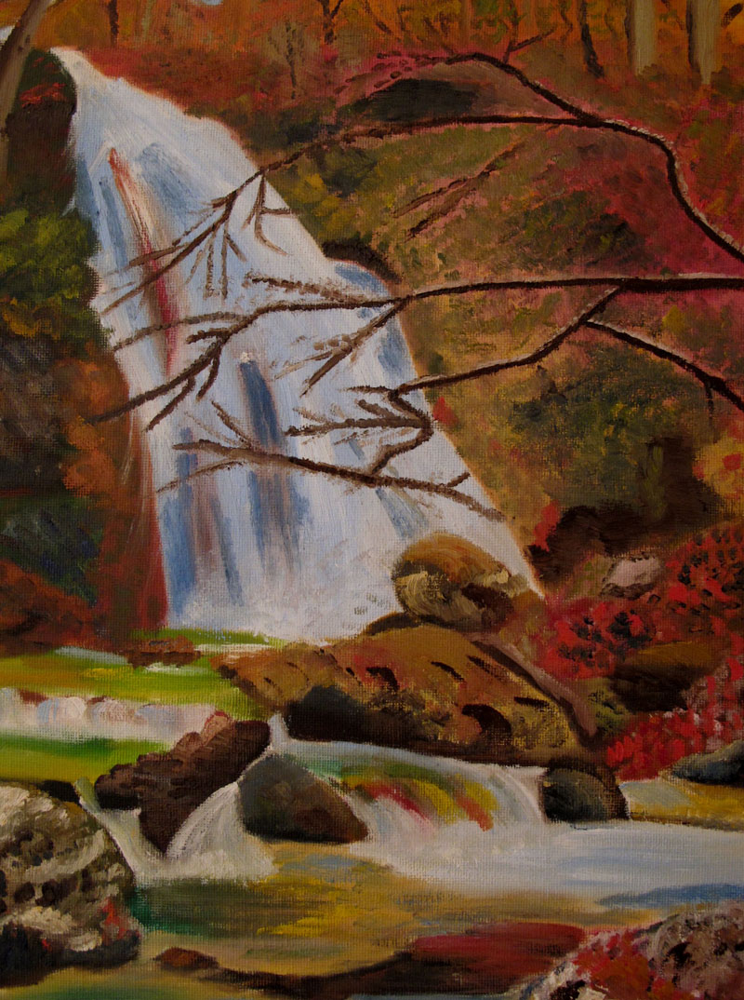

ФАЗОВЫЙ ПОРТРЕТ КАК ПОСОБИЕ В РАЗВИТИИ ТВОРЧЕСКИХ СПОСОБНОСТЕЙ ЛИЧНОСТИ: АНАЛИЗ СЛУЧАЯ
Ибадов Яшар Садай оглы Государственная Академия Азербайджана Международная школа Альтернативной Психологии AuthorID (для однозначной идентификации автора в РИНЦ). email: yashar1960m@list.ru Росликова Елена Владимировна Международная школа Альтернативной Психологии email: roslikova@gmail.com Дежурнюк Мария Сергеевна Международная школа Альтернативной Психологии email: msdezhurnyuk@gmail.com Санкт-Петербург, Российская Федерация
Аннотация. Представленное в данной работе исследование показывает влияние ФП на раскрытие творческого потенциала человека, помощь в реализации жизненных задач и предназначения, создании и становлении гармоничной семьи, раскрытии многомерной сути материнства, гармонизации родовых взаимодействий. В статье рассматривается роль различных ФП в становлении человека (на примере Марии Дежурнюк). Обоснована эффективность работы с ФП на отдельных этапах замужества, материнства, трудовой социализации. Показано применение ФП в процессе самопознания, раскрытия и развития художественных способностей, осознания и принятия ответственности за себя, за семью и род, обретения духовной состоятельности и полноты жизни.
Ключевые слова. Фазовый портрет человека, Фазовый портрет семьи, Фазовый портрет «Материнство», Альтернативная Психология, творческий потенциал человека, анализ случая.
Введение в проблему. Вопрос влияния Фазового портрета (далее ФП) на человека является междисциплинарным, ведь помимо наличия у данного феномена психологического основания для его создания, ФП также изучают с точки зрения медицины — его воздействие на здоровье человека. Динамичный характер и малая изученность феномена ФП подтверждают необходимость научных психологических исследований видов и компонентов ФП, факторов и условий его формирования. Актуальны исследования, связанные с процессом создания индивидуального ФП и систематической работой с ним по методике, разработанной Ибадовым Я.С.
Создание ФП человека, как один из методов Альтернативной Психологии [1] (далее АП), позволяет на практике гармонизировать и адаптировать личность к возросшим требованиям нового этапа в эволюции человечества [4, с.4].
Таким образом, исследование феномена ФП имеет большую теоретическую и практическую значимость. Более углубленные психологические знания по данной теме помогут обществу в решении вопросов полноценного развития личности, раскрытия творческого потенциала и генетически заложенных в человеке задатков, как основы для развития способностей и талантов. К тому же работа с личным ФП поможет человеку в укреплении уверенности в собственных силах и оптимизации своего внутреннего состояния.
Краткий обзор исследований (литературы).
Фазовый портрет – это зеркальное отображение фазовых превращений человека во Времени [4, с. 148]. Методика работы с Фазовым портретом позволяет выявить искажения нормального процесса метаморфоз, которые проявляются в жизни человека неблагоприятными ситуациями, психологическими проблемами, сказываются на состоянии здоровья в целом []. Всемирная организация здравоохранения определяет «здоровье» как состояние полного физического, душевного и социального благополучия, а не только отсутствие болезней и физических дефектов [3].Одновременно являясь местом метаморфоз Жизни, ФП способствует проведению в будущее и развитию в будущем позитивных информаций. ФП проявляет и фиксирует определенную фазу совершенства человека, формирует и открывает его Будущее.
Виды ФП. Наука АП выделяет несколько видов Фазовых портретов в зависимости от объектов работы, а именно: - Фазовый портрет человека; - Фазовый портрет семьи; - Фазовый портрет природных объектов; - Фазовый портрет социально- экологических объектов; - Фазовый портрет «Материнство».
Человек как микрокосм имеет полевую организацию подобно организации Вселенной. Он является частью этой единой системы и подчиняется законам многомерной реальности. Гармонизация энергоинформационных составляющих человека позволяет ему занять то место в единой системе мироздания, которое соответствует его возрасту, уровню сознания и космическому коду его жизни. Технологии АП способствуют созданию наилучших условий для устойчивости полей самого человека, для развития и расширения его сознания, для восприятия человеком единых жизненных процессов и обретения равновесия. При достижении равновесия мы переходим на более тонкий уровень вибраций восприятия и осознания процессов взаимодействия с миром.
Технологии АП позволяют проводить коррекцию во времени и создавать позитивные условия метаморфоз для живых систем. Осознанное присутствие в настоящем времени дает нам возможность корректировать информации прошлого и влиять на качество будущего. В результате человек объективно проживает необходимые жизненные ситуации, но при этом получает шанс пройти эти ситуации осознанно и в облегченном варианте. Аналогичный процесс для каждого человека проявляется при создании его Фазового портрета.
Таким образом, ФП налаживает жизненный цикл, обеспечивает психологическую защиту и безопасность личности и создает оптимальные условия для раскрытия ее творческого потенциала, реализации жизненных задач и предназначения.
Цель данной статьи – показать влияние ФП на раскрытие творческого потенциала человека (на примере жизни Марии Дежурнюк в период с 2009 по 2023 годы).
Задачи данной работы: 1. Показать ФП человека как пособие для активизации в нем творческого потенциала рода; 2. Рассмотреть ФП семьи как пособие для гармоничного развития личности человека в семейной сфере и становления самой семьи; 3. Показать влияние ФП «Материнство» на целостное развитие рода.
Результаты и их обсуждение.
Рассмотрим возможность раскрытия творческих способностей через работу с ФП на примере сестёр-двойняшек Дарьи и Марии 1983 года рождения. У двойняшек общие время и условия внутриутробного развития, родовые корни, схожие набор генов и энерго-информационный образ. Ученые определили, что двойняшки, как и близнецы, поддерживают друг друга в жизни, благодаря приобретенному до рождения биорезонансу, который сохраняется на протяжении жизни. По статистике близнецы и двойняшки живут дольше обычных людей. Но есть у двойняшек и индивидуальные особенности, проявляющиеся различиями в темпераменте, характере, психоэмоциональных реакциях, талантах, способностях, жизненных интересах.
В пять лет у Дарьи Акуловой проявились способности к стихосложению и писательской деятельности в отличие от Марии. Это стало определяющим событием в ее судьбе. И через годы в жизни Дарьи последовали: выпуск поэтических сборников и самиздатовского журнала, участие в Форумах молодых писателей России, руководство литературной студией для школьников, создание творческого объединения «Запасный выход». По всей видимости, девочки родились с различной степенью развития правых полушарий головного мозга, так как сестра-двойняшка Мария не проявляла поэтические способности и не видела в себе гуманитарных талантов. Она предпочитала точные науки. Мария окончила Санкт-Петербургскую химико- фармацевтическую академию и работала по специальности.
Но со временем Мария заинтересовалась возможностью развития своего правого полушария с помощью инновационных методик АП. В возрасте 26 лет она обратилась к профессору Я.С. Ибадову с просьбой создания ее индивидуального ФП с целью раскрытия для нее творческого потенциала рода. Предварительно Мария уже подготовилась, занимаясь по Медико-педагого- психологическим тестам, которые способствуют совершенствованию личности через метаморфозы психической энергии и расширение сознания.
Полученный в 2009 году первый ФП, дал «основу толчку и скачку на пути духовного становления» Марии и раскрытия ее творческого потенциала.
Первое стихотворение-благодарность Мария посвятила Яшару Ибадову! А за последующие два года Мария написала более 15 стихотворений.
Известно, что момент рисования ФП конкретного лица считается началом нового этапа его жизни, так как ФП, фактически, совершенное средство, которое дает возможность реализовать творческий потенциал человека на пути его развития и наладить его жизненный цикл, формируя из несовершенного образа пациента новый образ за счет его же собственной энергии [4, с.162 ].
Так и произошло в жизни Марии. Регулярно работая со своим ФП и по МПП-тестам, Мария обрела живой интерес к самой науке АП и ее методикам. В работе с ФП Мария всегда чувствует лёгкость, прилив вдохновения и уверенности в своих силах. Таким образом Мария раскрывает в себе родовой творческий потенциал, с удовольствием проявляет его в различных сферах деятельности и успешно реализует творческий подход к Жизни в целом. Далее последовало: обучение в Школе АП; участие в научных конференциях и во Всемирных сеансах коррекции по ФП Материнства, коррекции информации озера Байкал, Каспийского моря, г. Волгограда; организация участников коллективных сеансов коррекции различных объектов; руководство ЦАП г. Санкт-Петербург «Седьмой Ключ».
С 2011 года Мария начала писать картины маслом.
В рамках научно-практической конференции АП, проходившей в Крыму
в 2011 году, состоялся выездной коллективный сеанс коррекции на водопаде
Джур-Джур. Дарья и Мария принимали участие в работе конференции. Обе
сестры вдохновились красотой водопада и одновременно написали стихи,
посвятив их Крыму. Позднее Мария написала и картину самого водопада.
Стихи сестёр-двойняшек Дежурнюк Марии и Акуловой Дарьи, сентябрь 2011
Джур-ДжурПо каплям собирается ручей, Играя светом и дыша озоном. Затем вода становится сильней, Струится быстро по отвесным склонам. И сила счастья возрастает в нём, И в каждой капле светом жизнь искрится, И солнцем наполняясь, день за днём, Даёт в себе возможность отразиться. |
Водопад в КрымуЖурчи, журчи, Джур-Джур, - о, леса дух зелёный, Весь переполненный прохладой и водой, Поговори, не раскрывая уст, со мной. Поговори, не раскрывая уст зелёных. Твой мягкий мох растёт под льющейся водой, Твой мягкий мох похож на шерсть большого пса, В твоём пространстве происходят чудеса, Здесь лес и небеса встречаются с землёю. Вода, как пятерня, легла на "морду пса" И гладит медленно изящною рукою Его зелёный нос. И длинною строкою Струится вдохновенье в небеса. |

Рис. 1. Водопад Джур-Джур.
Автор картины Дежурнюк Мария, сентябрь-ноябрь 2011 г.
Холст, масло.
Таким образом в познании новой науки АП, в работе с ФП, в сопровождении психографов развивалась во времени личность Марии. Главная задача психографа – помочь человеку принять жизнь во всех ее проявлениях, пройти через жизненные трудности и, переосмыслив отношения с собой, другими, миром в целом, принять ответственность за свою жизнь и жизнь своих близких, продуктивно преобразовать жизненную ситуацию, сформировать условия и устойчивую мотивацию к дальнейшему развитию семейных отношений.
Методологически развивается и сама наука АП. Успешно апробирована новая форма психотерапевтической коррекции семейных отношений – с применением метода «Фазовый портрет семьи». ФП семьи, во-первых, дает каждому члену семьи настройку на общий энерго-информационный образ семьи, который оберегает единую фазу семьи, гармонизирует внутренние процессы. Во-вторых, происходит синхронизация временных процессов – циклов, ритмов развития семьи. В-третьих, психокоррекция с помощью ФП семьи позволяет формировать и удерживать фазу закономерного распределения материальных ресурсов жизнеобеспечения семьи. Наконец, когда образуется устойчивое системное равновесие внутрисемейных взаимодействий, такая семья занимает соответствующий социальный статус.
В 2010 году Мария и Владимир Дежурнюк создали семью. В 2011 году в ходе работы профессора Я.С. Ибадова с супругами был получен первый ФП их семьи. Рождение в 2012 году старшего сына стало началом познания и раскрытия материнства для Марии. Подготовка к этому событию проходила с использованием методик АП: психографии, психокоррекции, психургии, ФП человека, ФП семьи и Фазового портрета «Материнство»[2].
Работа с ФП «Материнство» способствует очищению наследственной информации и передаче её и творческого потенциала предков в будущее, помогает появлению на свет здоровых и счастливых детей, будущих поколений. Фазовый портрет «Материнство», созданный доктором Яшаром Ибадовым в 2009 году, работает как Матрица Преображения Материи. И это преображение возможно, в том числе, и через сознание Женщины, носительницы материнских энергий и информаций. В процессе работы с ФП «Материнство» раскрывается многомерная суть Материнства. С 2011 года доктор Я.С. Ибадов регулярно проводит перед Новым Годом Всемирный интерактивный сеанс коррекции по Фазовому портрету «Материнство» (далее ВСКФП «Материнство») с целью помощи материнским энергиям и информациям на уровне Матрицы. В процессе сеанса все участники работают одновременно на индивидуальном, родовом и планетарном уровнях. Весь мир получает позитивное и гармоничное воздействие.
Мария приложила большие усилия для вдохновения всех членов своей семьи к ежегодному участию во ВСКФП «Материнство». Тем самым дала им почувствовать высокий эмоциональный подъём, новый творческий импульс и получить реализацию позитивных желаний в новом году.
На сегодняшний день Мария, проявляя новые для нее организаторские способности, содействует раскрытию творческого потенциала семьи, вдохновляет своих родных на творческое развитие, укрепляя у них веру в собственные силы. Также своими усилиями Мария поддерживает настрой на позитивное общение всей родни, ведет семейный чат, где обсуждаются совместные мероприятия, организует семейный досуг.
В 2020 году Мария прошла обучение по специальности «Психологическое семейное консультирование и психокоррекция отношений» и получила диплом с отличием. Новые профессиональные знания и навыки, приобретенные в Школе Альтернативной Психологии, дают Марии возможность помогать людям, используя методики как традиционной, так и альтернативной психологии.
В 2016 году в семье Марии родился средний сын Александр.
В 2022 году по просьбе Марии и Владимира профессор Ибадов создал второй ФП семьи Дежурнюк с целью гармоничного появления на свет их третьего ребёнка. В результате все члены семьи вошли в свое ресурсное состояние, стали более спокойными и позитивными. Легкая беременность увенчалась в ноябре 2022 года рождением Даниила! Сейчас в семье трое сыновей — Вячеслав, Александр и Даниил! Дети — красивые, умные, здоровые, дружные. Благосостояние семьи растет. Семья расцветает! И Мария стала счастливым человеком и осознает свое счастье.
Выводы.
1. ФП является эффективным пособием для активизации творческого
потенциала рода.
2. ФП семьи способствует синхронизация временных процессов – циклов
всех ее членов, что позитивно влияет на общие ритмы развития семьи.
3. ФП «Материнство» помогает очищению наследственной информации, и
тем самым, появлению на свет здоровых и счастливых детей.
Список литературы
1. Авторские права на новый научный подход, разработанный доктором
медико-биологических наук, профессором Яшаром Ибадовым,
зарегистрированы Российским Авторским Обществом в Реестре за № 6274 от 3
марта 2003 г.
2. Авторское право на изобретение No-37241 (Украина), Фазовый портрет
«Материнство».
3. Всемирная организация здравоохранения о здоровом образе жизни
[Электронный ресурс]; https://ippk.arkh-edu.ru/doc/detail.php?ID=832574
4. Ибадов Я. Психография как метод всестороннего развития новой
личности. – Тюмень: Истина, 2007.